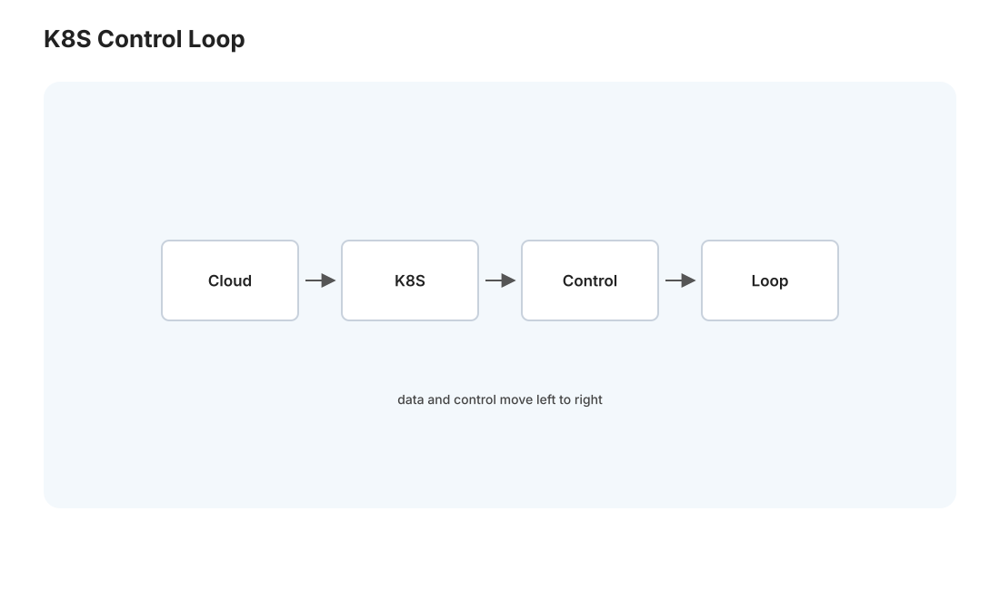
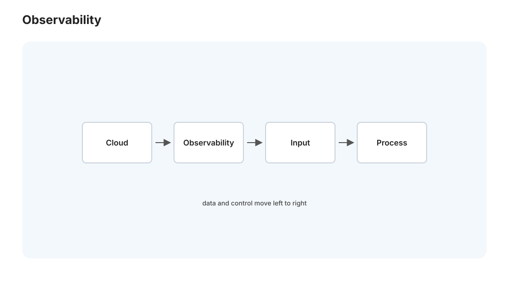

云 II · 编排、K8s 与可观测性
对标：Kubernetes 文档 / Kubernetes Up & Running / Google SRE 书 ｜ 前置：cloud-01（容器）、dist 线（分布式）、web-02（可观测性初步） 几个容器用 docker-compose 够了；但当你有成百上千个容器跨几十台机器、要自愈、要按负载扩缩容——就需要编排（orchestration）。这一页讲 Kubernetes 的核心思想（声明式 + 控制循环，一个优雅的分布式系统）、以及可观测性（怎么看见一个庞大系统的健康——监控、日志、追踪、告警）。这条线的落点是"让大系统可靠运行"的运维工程，也回收 Medusa"静默失败"的教训。
1. 为什么需要编排
单机几个容器你手动管（cloud-01）。但规模上去后，一堆事没法手动：机器挂了容器要迁走、流量涨了要加实例、更新要滚动不能停服、几百个容器要相互发现和通信。编排系统自动化这些——你声明"我要 3 个这个服务的副本"，它负责让现实始终符合这个声明。Kubernetes（K8s）是事实标准。
2. K8s 的核心思想:声明式 + 控制循环

K8s 最优雅的地方是它的工作原理——声明式期望状态 + 控制循环(reconciliation)：
- 你声明"期望状态"（YAML）：我要这个应用跑 3 个副本、用这个镜像、开这个端口。
- 控制器不断对比"期望 vs 实际"，驱动实际趋向期望：挂了一个副本 → 控制器发现"实际 2 ≠ 期望 3" → 启一个新的。这个"观察 → 对比 → 调整"的循环永不停。
这就是 K8s 的灵魂——"你说要什么状态，我持续保证它成立"（🔗 与 dist-02 Raft 的状态机复制、se-02 CD 的期望状态、甚至 React"UI=f(state)" web-03 同一种声明式哲学）。你不写"怎么做"（命令式脚本），只写"要什么"（期望状态），系统自己 reconcile。自愈能力就是控制循环的自然结果——不是特意编程"挂了就重启"，而是"实际偏离期望就纠正"的通用机制顺带实现了自愈。
核心抽象： - Pod：最小部署单位（一个或几个紧密容器），有自己的 IP。 - Deployment：声明"这个应用要几个副本"——管理 Pod 的创建、滚动更新、回滚。 - Service：给一组 Pod 一个稳定的访问入口 + 负载均衡（Pod 会来来去去、IP 会变，Service 提供不变的名字，🔗 dist 的服务发现）。 - 控制平面：API server（入口）+ etcd（存所有状态，🔗 dist-02 Raft 集群！K8s 的大脑就是个 Raft 存储）+ scheduler（决定 Pod 放哪台机器，🔗 os-01 调度的分布式版）+ controller（跑控制循环）。
3. K8s 提供的能力
- 自愈：容器/节点挂了自动重建/迁移（控制循环）。
- 水平扩缩容：按 CPU/自定义指标自动加减副本（HPA）——负载高自动扩、低了缩（省钱）。
- 滚动更新 + 回滚：逐个替换旧版本 Pod、有问题一键回滚（🔗 se-02 CD 策略的落地）。
- 服务发现 + 负载均衡：Service 自动把流量分到健康的 Pod。
- 配置与密钥管理：ConfigMap（配置）/ Secret（密钥）与镜像分离（🔗 sec-02，别把密钥打进镜像）。
- 存储编排：持久卷（PV）给有状态应用（数据库）挂持久存储（🔗 cloud-01 volume 的集群版）。
代价与判断：K8s 强大但复杂——运维一个 K8s 集群本身是重活。不是所有系统都需要它：小项目、单机、流量稳定的，docker-compose 或干脆一台机器 + 进程管理就够（你的 Medusa 现在就是这样，完全合理）。"何时该上 K8s"是工程判断：多机、要自愈、要弹性扩缩、团队够大时才值。过早上 K8s 是一种技术债（se-02 的过度工程）。
4. 可观测性:看见庞大系统的健康

系统越大越分布，"出了什么问题"越难查（🔗 dist 线的调试地狱）。可观测性是"从外部观察就能理解系统内部状态"的能力，三支柱（web-02 提过，这里系统化）：
- 指标（Metrics）：数值时序——QPS、延迟（p50/p99）、错误率、资源用量。工具 Prometheus + Grafana。RED 方法（Rate 速率 / Errors 错误 / Duration 延迟）+ USE 方法（Utilization / Saturation / Errors）是选指标的经典框架。
- 日志（Logs）：离散事件记录——集中收集（别散在各机器）、结构化、可查询。
- 追踪（Tracing）：一个请求跨多个服务的完整路径 + 各段耗时——分布式系统定位"慢在哪个服务"的关键。
- 告警（Alerting）：指标越界主动通知——"无告警 = 用户先于你发现故障"。
回收 Medusa 的教训（memory 血泪）："webapp 挂一周""RSS 断供 3 天静默失败""无主动告警""MedusaPredict 静默失败 4 天"——这些全是可观测性缺失的经典案例：系统坏了没人知道，因为没有监控 + 告警。本页给出的解药：哪怕最简单的健康检查（定时 curl 关键端点，挂了发个通知）+ 关键指标监控（articles 表还在涨吗？预测 state 更新了吗？），就能把"3 天后偶然发现"变成"3 分钟内收到告警"。可观测性不是大厂专利，是任何 24/7 系统的基本生存装备——这是本页对你最实用的一课。
5. SRE:可靠性的工程化
Google 的 SRE（站点可靠性工程） 把"运维"变成"工程"： - SLI/SLO/SLA：服务水平指标/目标/协议——用数字定义"多可靠算可靠"（如 99.9% 可用）。别追求 100%（成本无穷、也无必要）——定一个合理目标，留错误预算（允许的不可用额度）给发布和创新。 - 消除琐务（toil）：重复的手动运维（memory 里"手动点开 webapp"）要自动化——人应该做工程，不是当人肉 cron。 - 无指责复盘（blameless postmortem）：故障后复盘系统和流程的问题，不追究个人——从故障中学习（memory 里那些故障复盘正是这个精神）。
方法论：可靠性是设计出来的，不是救火救出来的——冗余、自愈、可观测、快速回滚（se-02）、渐进发布，这些前置的工程投入，换来的是不用半夜起来救火。对你 24/7 的 Medusa，往这个方向走一小步（哪怕就加个健康检查告警），生活质量就大不一样。
6. 练习与要点
例 1（声明式的威力） 描述"手动保证 3 个副本一直在"（要不断检查 + 手动重启）vs K8s Deployment（声明 replicas: 3）——理解"声明期望 + 控制循环自愈"比命令式脚本强在哪。
例 2（该上 K8s 吗） 判断 Medusa 现状（单机、流量稳定、你 + GPT 小团队）该不该上 K8s——答案是不该（过度工程），练"何时该用重武器"的判断。
例 3（给 Medusa 加可观测） 设计一个最小监控：健康检查哪几个端点/指标（webapp 活着吗、articles 在涨吗、预测 state 新鲜吗）、超时怎么告警——把本页直接用到根治你系统的"静默失败"顽疾。\(\blacksquare\)
工程与全栈线的主体完成。下一页进入安全线——从攻击者视角理解系统的脆弱面，才能构建防御。（教育/防御视角：懂攻击是为了会防守。）